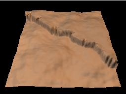
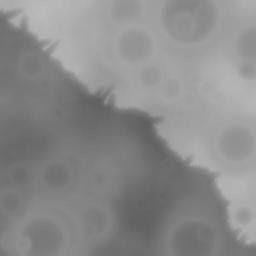

1. Création de l'image de relief Créez un nouveau document de votre
choix. Ici j'ai choisi une subdivision #2, avec les paramètres
par défaut. Créez un nouveau document de votre
choix. Ici j'ai choisi une subdivision #2, avec les paramètres
par défaut. |
 |
| 2. Diminution du contraste Pour mettre en évidence la
dénivellation créée par la faille, il est
préférable de diminuer le contraste.
|
 |
| 3. Dessin de la faille Pour cet exemple, la faille est placée approximativement en diagonale. Vous pouvez ajuster sa position en déplaçant les extrémités de la ligne de contrôle. Cochez la case "crevasses" pour générer des crevasses élémentaires. L'outil d'érosion permettra d'en augmenter le réalisme. Ajustez la longueur et la largeur des crevasses selon l'effet désiré. La longueur (profondeur) des crevasses est une valeur arbitraire, relative à la longueur des segments du niveau de subdivision courant. La largeur des crevasses est relative au nombre de subdivisions. Une largeur de 1 signifie que la crevasse est faite au niveau de la dernière subdivision, une largeur de 2 signifie que l'avant-dernier niveau de subdivision est utilisé (la crevasse sera donc plus large), et ainsi de suite. |
  |
| 4. Érosion de la faille Utilisez l'érosion par l'eau pour augmenter le réalisme de la faille. Répétez l'érosion autant de fois que désiré. Comme le montre le grossissement d'un rendu Povray à droite, l'ensemble du terrain est érodé. De plus, les canaux d'érosion paraissent à angle droit (c'est une caractéristique de la version actuelle de l'algorithme d'érosion). Ce n'est pas très naturel. Il serait plus normal que seule la faille s'affaisse. Ce rendu a été obtenu avec les paramètres d'aperçu suivants, automatiquement transférés à la définition de scène simple_terrain.pov: |
  |
| 5. Érosion de la faille avec seuil de
pente Pour n'éroder que la faille, il suffit d'augmenter le seuil d'application de l'érosion, de telle façon que seules les pentes presque verticales soient érodées. Le contraste peu élevé du terrain de départ fait que seule la faille sera touchée. Cliquez sur "Remettre à 0" pour repartir de l'image originale. Cela fonctionne même si vous avez répété l'érosion plus d'une fois, pourvu que vous n'ayez pas cliqué sur "Accepter". Le rendu à droite a été obtenu en appliquant les 100000 gouttes trois fois, sur un terrain de 512x512. |
 |
| 6. Bienvenue sur Mars! Bien que nous ayons utilisé l'outil "érosion par l'eau", le résultat pourrait aussi être considéré comme une érosion par gravité (affaissement). Alors, qu'il y ait eu de l'eau ou non sur un tel terrain, l'érosion est plausible, et rien ne nous empêche d'ajouter des cratères, comme ceux qu'on peut voir sur une planète sans pluie! Dans cet exemple, 20 cratères ont été semés sur la surface. Le bruit de surface à conserver a été augmenté de 2 à 4 pixels, autrement la surface des cratères paraissait trop lisse. Les cratères appliqués sur de fortes dénivellations ne sont pas très réalistes. Pour éviter de générer des cratères sur la faille, il suffit d'activer le paramètre "Dessiner si pente inférieure à...". La valeur choisie (10) signifie qu'un cratère ne sera pas dessiné si la dénivellation maximale sous le cratère est supérieure à 10% de la hauteur maximale d'un terrain (65535). L'angle de vision a été ajusté dans l'aperçu (à droite) afin de masquer la ligne d'horizon, pour ne pas montrer les cratères coupés à la bordure du terrain. |

 |
 Retour à l'index de la
documentation
Retour à l'index de la
documentation